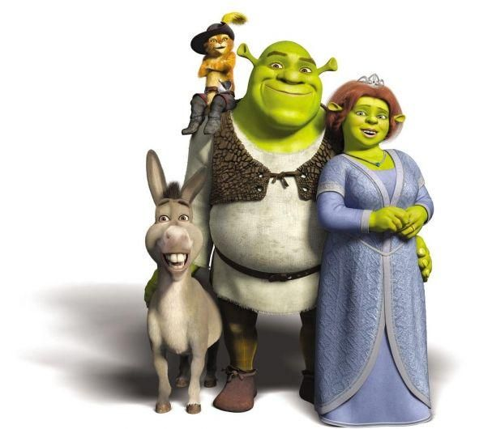

Shrek é uma franquia de filmes de animação computadorizada direcionados principalmente ao público infantojuvenil e os diversos outros itens que estes filmes inspiraram. Foi criada em 2001 pela DreamWorks Animation com o longa-metragem animado Shrek, vagamente baseado no livro infantil Shrek!
